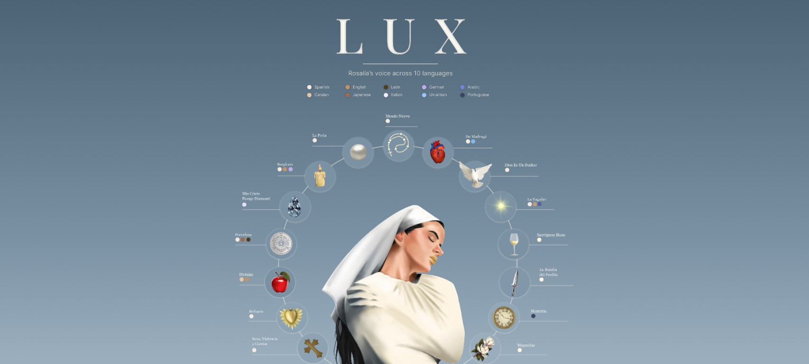

Info
An illustrated infographic exploring the languages featured in LUX, Rosalía’s album. The project translates musical and cultural information into a visual narrative, combining illustration, information design and editorial composition to create an engaging and visually distinctive piece.